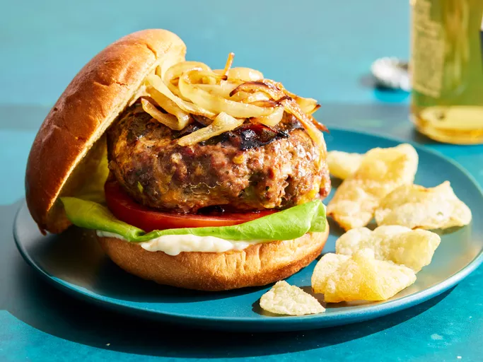

Hamburguer

Description
The best burger recipe for summertime grilling! This juicy burger is jam-packed with all kinds of stuff and has no tasteless bread crumbs.
Serve on buns with your favorite condiments.
Ingredients
These are the ingredients you’ll need to make this top-rated hamburger recipe:
- 3 pounds lean ground beef
- 1 onion, finely chopped
- 1 cup shredded Colby Jack or Cheddar cheese
- 2 large egg
- 2 (1 ounce) envelope dry onion soup mix
- 2 clove garlic, minced
- 2 tablespoons garlic powder
- 2 teaspoons soy sauce
- 2 teaspoons Worcestershire sauce
- 2 teaspoons dried parsley
- 2 teaspoons dried basil
- 2 teaspoons dried oregano
- 1 teaspoon crushed dried rosemary
- salt and pepper to taste
Steps
- Gather all ingredients. Preheat an outdoor grill for high heat and lightly oil the grate.
- Meanwhile, combine ground beef, onion, cheese, egg, onion soup mix, minced garlic, garlic powder, soy sauce, Worcestershire sauce, parsley, basil, oregano, rosemary, salt, and pepper in a large bowl.
- Use your hands to form the mixture into 4 patties.
- Cook patties on the preheated grill until no longer pink in the center and the juices run clear, about 4 to 5 minutes per side.
- An instant-read thermometer inserted into the center should read at least 165 degrees F (74 degrees C).